全文讲解约 20 分钟
Building always-on agents：多数时间在休眠
William Hu 这份指南讲的是产品里的常驻 agent。常驻指的是使用体验。agent 可以跨很多次 session 自己决定何时动手。
底层仍是和其他 agent 一样的 core loop。差别在外围：什么时候醒、什么跨 run 留下、结果怎样到用户手里。
作者把回潮主要归于判断力，以及长任务更便宜
近几个月 always-on agents 又多起来。作者用 stateful 描述它们：跨 session 管上下文，没人盯着也会行动。
78% 只属于一项 long-horizon 编程基准：Opus 5.5 每解决一个任务，比 Opus 5 少 78%。40% 是 typical workloads 上的降幅，不是这项基准里的另一个数。
78% 的范围是那一项基准、每解决一个任务。40% 的范围是典型工作负载。两数都不要写成所有任务的普遍降幅。出处链到成本优化文档。
Customers 已经来问怎样把这种体验放进自己的产品。有的想让现有 agent 更主动。有的打算从头搭。
出处：William Hu · 开篇
run 是醒着的那一轮，session 是这轮所在的记录
An always-on agent is not actually “always on.”
William Hu出处：William Hu · The cycle behind the always-on agent
always on 描述的是用户看到的体验。agent 大部分时间在睡，隔一阵醒过来干活。
一次醒来到做完，叫做 run。agent 收到事件，做完任务，再把发生的事存下来。run 发生在 session 里面。session 是消息和工具调用的记录。
run 结束就回到睡眠。这个循环可以一直重复。
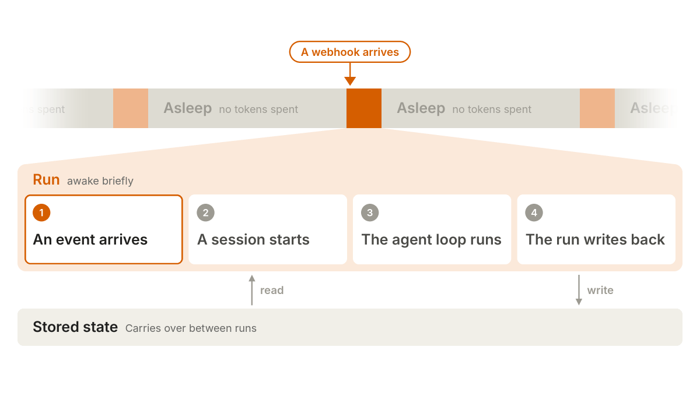
外围架构是 event inbox、timer、memory、permissions、outbox
event inbox 是事件的持久列表。timer 负责到点再叫醒。memory 留下查不回来的内容。permissions 管这次能不能自己做。outbox 管要不要把结果送给用户。
下面按这个顺序看每件东西怎样接到 run 上。
来源不要直接叫醒 agent，先写入 event inbox
多数 agent 只在用户发消息时跑。常驻 agent 还会被 webhook、定时任务和后台作业叫醒。
每个来源直接调用 agent，会有两种失败。两个事件同时到，可能开出两场互相抢的 run。进程崩溃，事件会整个丢掉。
所以每个来源把事件送给 inbox，再由 worker 领取。最简单的版本有三件：durable list，通常是一张数据库表；handler，通常是 HTTP endpoint；worker，通常是 background service，负责从列表里读。
inbox 记下每条事件的状态。可以用源那边的唯一标识去掉重复。作者建议先按每个用户一个 inbox。需要更多并行时再拆开。这是建议，不是唯一合法的切法。
handler 把事件写入 inbox，并唤醒 worker。worker 先读还没做的事件，再开始 run。接着先前工作的事件，例如用户的回复，恢复已有 session。其他事件新开 session。
worker 把事件交给 agent loop，等 run 结束，再把对应事件标成完成。
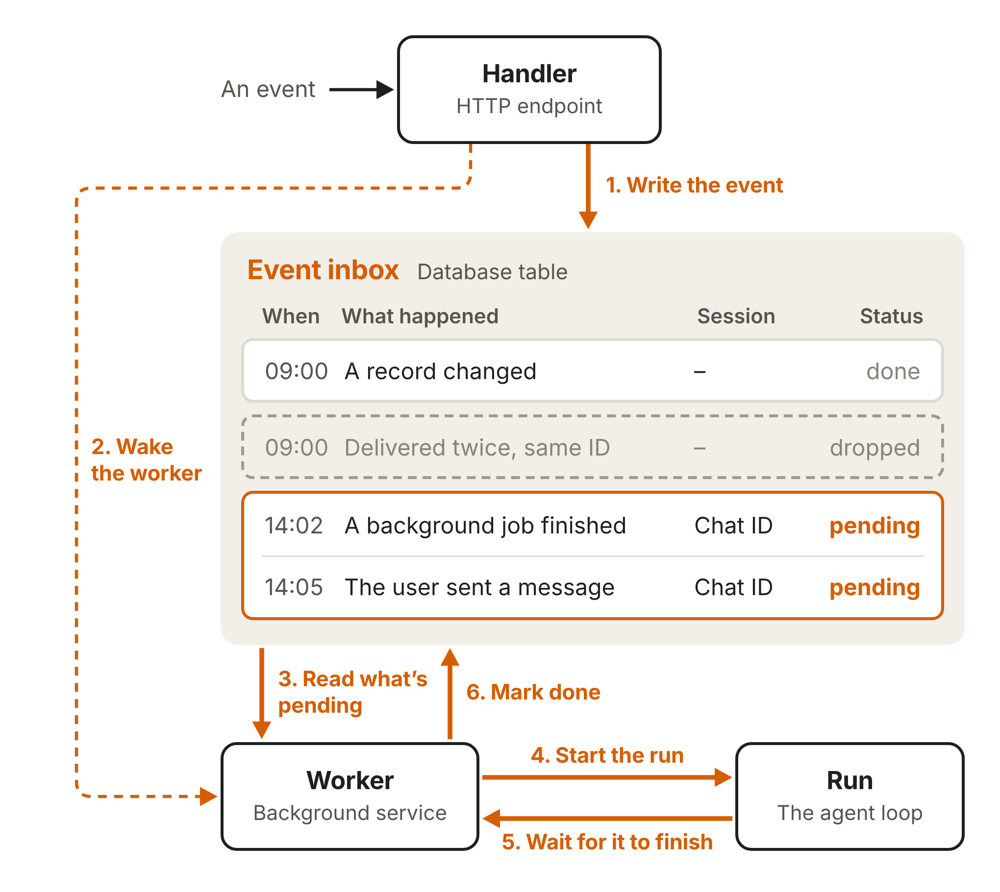
handler 快回执，inbox 是唯一事实来源，同时只有一个 worker
handler 要尽快 acknowledge。有的 webhook 来源把慢响应当成失败。轻量检查可以留在 handler。提示注入这类更深的核对，放到 run 里面做。
inbox 是 source of truth。worker 被叫醒后，先从 inbox 拉最新事件。worker 若死在 run 中途，新的 worker 还能捡起同一条事件重试。
一个 inbox 同时只有 one active worker。这样两场 run 不会重复干活，也不会互相覆盖。
run 进行中又来了新事件，作者给出三种做法，可以任选：推到 next，折进 current，或者 restart。文中没有规定只能用其中一种。
worker 应 batch pending events。用户连发几条消息时，可以合成一场 run，只回复一次。
timer 存在另一张表里，到期后才变成 inbox 里的事件
timer 和 event inbox 一起，agent 才能主动。timer 大体两类。follow-up 是 agent 给自己定的截止时间，例如去看对方回了没有。schedule 是已知节奏上的重复任务，例如每日简报。
timer 放在自己的持久存储里，通常是另一张表，和 inbox 分开。inbox 里只放已经可以动手的事件。原文用的词是 only。两类 timer 的字段可以相近。schedule 还要记下重复规则。

timer 自己不发起 run。scheduler 通常是后台服务，按固定间隔去扫这张表，把到期的触发掉。scheduler 可以自己写，也可以用持久执行引擎。原文没有给这个引擎的产品名或链接。
出处：William Hu · The core primitives
每一轮里，scheduler 先找出到期的 timer。follow-up 标成完成。schedule 把到期时间改到下一次。然后往 inbox 加一条事件，并唤醒 worker。
memory 只留下以后查不到的内容，别处已有的只留指针
常驻 agent 的 run 彼此断开，连续性靠 memory。memory 也要有自己的存储。Claude Code 的 auto memory 和 Messages API 的 memory tool 在产品里是一个文件目录。常驻 agent 要把这些目录映射到数据库或对象存储，这样 worker 停了，记忆还在。
经验法则是：memory 只放 agent 不能再查到的东西。事情已经在别的系统里，例如问题跟踪器，就只存一个 pointer。
User instructions: 用户关于 agent 行为的指令单独成文，每次 run 开始时加载。用户不会一直在旁边纠正，所以指令要跨 run 带上。
User notes: 记下角色、偏好和用户做过的纠正。可以从一个文件开始。变多以后拆成小文件。那时每次开头只加载索引，需要细节再把单个文件拉进上下文。
Past messages: 记下已经告诉过用户的话，避免重复。可以单独成文并在每次开头加载，也可以由 worker 载入最近几条和用户的消息。
Task progress: 每个进行中的任务有一份进度文件，写已经做了什么、还剩什么。新的 run 读这份文件接着做。和 user notes 一样，开头只加载索引，需要时再读具体文件。
下面这张图是一种示例摆法，不是唯一目录结构。

每次 run 都先付一笔上下文开销，压缩或新开 session 都会丢细节
上面说的是 run 进行中写下的 memory。还可以加 dreaming：回看过去的 session，整理记忆。dreaming 可以换掉过时条目，也能找出只有跨很多 run 才看得到的模式。细节在 agent memory 那篇。
动手之前，agent 先加载系统提示、工具定义和 memory 文件。这笔开头的 context overhead 每次 run 都在。作者建议把它保持精简，并用 prompt caching 降低成本。这是建议。
新 session 只有这笔开销，加上触发这次 run 的事件。已有 session 还会带回先前 run 的消息和工具调用。
session 太长时，可以做 compaction，也可以新开一个 session。两种做法都会丢掉细节。需要留下来的内容，要在过程中写进 memory。

无人值守时，工具调用可以自己做、拦下，或停下来等批准
Permissions 是风险最大的一块。一场 run 拿着用户的访问能力，而且按设计是无人看着的。每次工具调用，agent 要决定自己继续、拦下，还是等批准。
用到的组件和其他 agent 相同。作者着重写了三件。
Credential store: 常驻 agent 常常需要密码或访问令牌才有用。推荐的做法是 agent 环境外面放一个代理。agent 发出的请求不带凭证。代理在转发前注入真正的凭证。文档在 credential management。
Auto mode: 常驻 agent 不能每一步都等人。Claude Code 里已经有一版 auto mode。分类器审查风险较高的动作，拦下它认定危险的，让 Claude 改走更安全的做法。最重要的决定仍然要用户看。分类器不代替这些决定。
Deferred tool calls: Claude Code 里 hook 可以推迟一次工具调用，等用户再给信息。常驻 agent 在某些动作前也可能要澄清或批准。调用被推迟时，这场 run 结束，session 停在这次调用中间并保存下来。
请求展示给用户，例如用 MCP Apps 做一张交互卡片。用户的回答作为 inbox 里的一条事件回来。这条事件开始一场新的 run，用用户的输入恢复已保存的 session。
推迟的调用在等回复时，worker 可以去领别的事件。agent 不会因此被卡住。这里说的是这一次被推迟的工具调用，不是所有待办都先挂起。
补充：deferred tool call 只覆盖需要澄清或批准的那次调用。不要把它理解成队列里每件待办都要先结束 run。
多数情况直接 send 就够，正式 outbox 只在要控制节奏或能恢复时才需要
普通 agent 把生成过程流式推给用户。用户看得到推理、工具调用和答案。常驻 agent 的大部分工作在后台。用户得到的是结果和少量细节，不是逐步过程。
一场 run 可以以三种方式结束。一种是 sends。一种是 nothing。一种是去要 additional。
多数常驻 agent 有一个 send 工具，直接把消息交给用户就够了。只有当你要控制发送节奏，或要让 agent 能从发送错误里恢复时，才需要正式的 outbox。这是条件，不是默认都必须建表。
outbox 是一张待发消息的表，和 event inbox 对称。dispatcher 通常是后台服务，和 worker 对称。它读待发消息，决定送哪些，再送给用户。deferred tool call 的请求可以走 outbox，也可以直接显示在界面上。
发得太多会吵。发得太少会漏掉用户该知道的事。作者建议用评测去找这个平衡。实践上，更好的起步是先安静，再逐渐挣得用户的注意。这是建议。
每场 run 都很短，循环一直转，才像始终在线
每场 run 都从 inbox 里的一条事件开始。它可以是用户消息、webhook，或 timer。worker 领到事件后开一场 run，在新的或已有的 session 里叫醒 agent。
agent 先读 memory 取得基线，在 permissions 允许的范围内行动，再把新学到的写回 memory。run 结束后把一行推进 outbox，由 dispatcher 送给用户。
这些合在一起是一个循环。一场 run 可以设一个 timer，以后再把自己叫醒。用户回复一条消息，回答又成为 inbox 里的事件。每场 run 都很短。循环可以一直继续。这就是它让人觉得始终在线的原因。
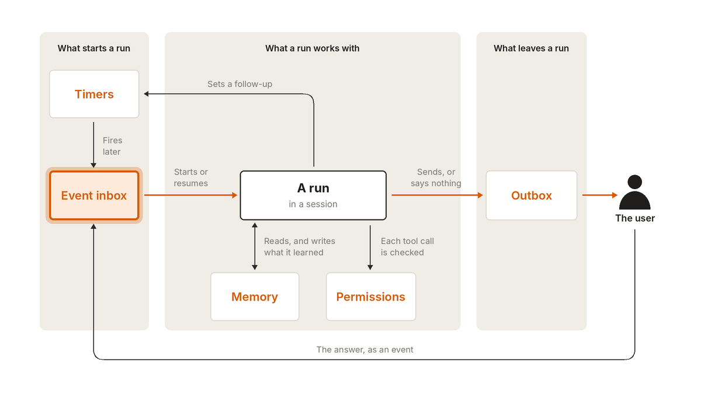
模拟器是教学示例，用来把原文的分支走一遍。数字和退款情节不是原文记录的一次运行。
作者是 William Hu。致谢 Rodrigo Olivares。还有 Michael Segner。
出处：William Hu · Acknowledgements
邵文在转述之外，加了讲座对照、子集口径和落地顺序
帖子状态号是 2121427594260398327。文章标题里写着 7*24。五个部件他译成收件箱、计时器、记忆、权限和发件箱。
Article 正文第一行开头多了一个空格，第二段标题写成 uilding，少了开头的 B。两段开场并排。第一段写读者可能是想改已有 agent。第二段又写也可能从零开始搭。这里按原文保留，不改字。
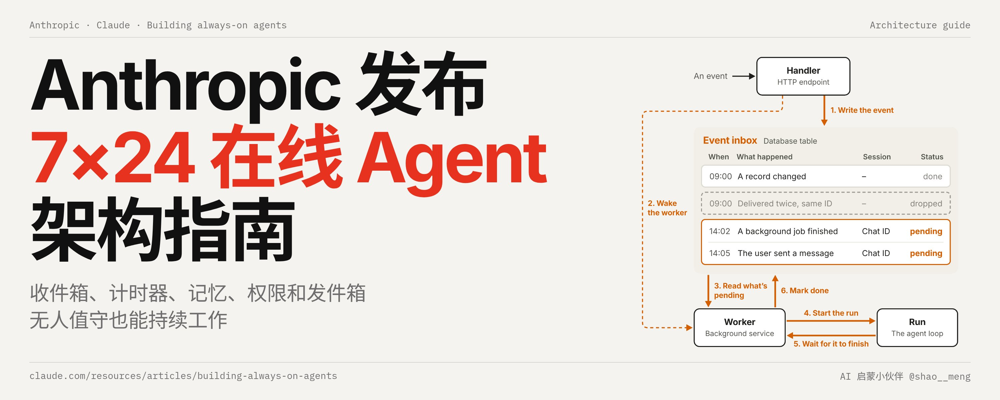
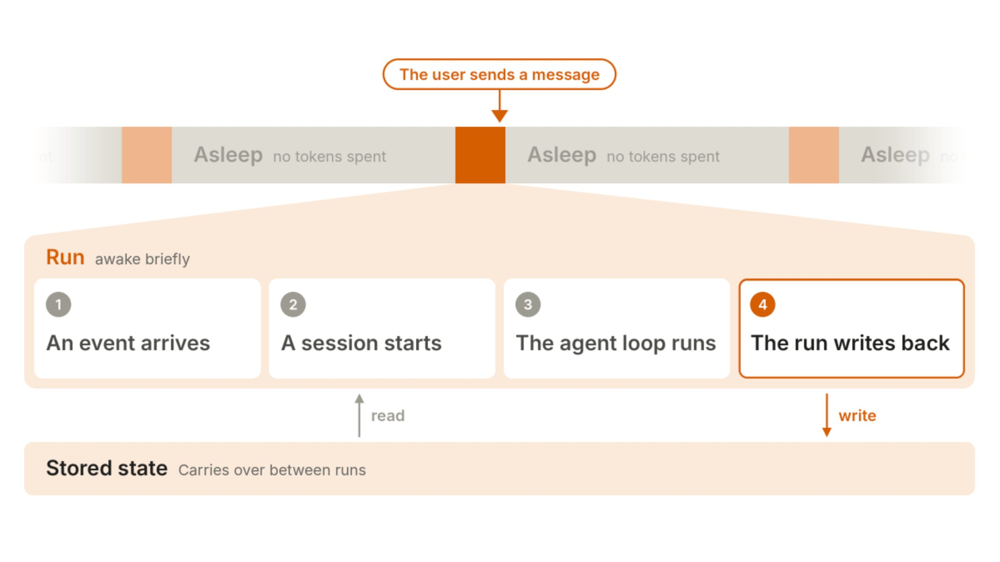
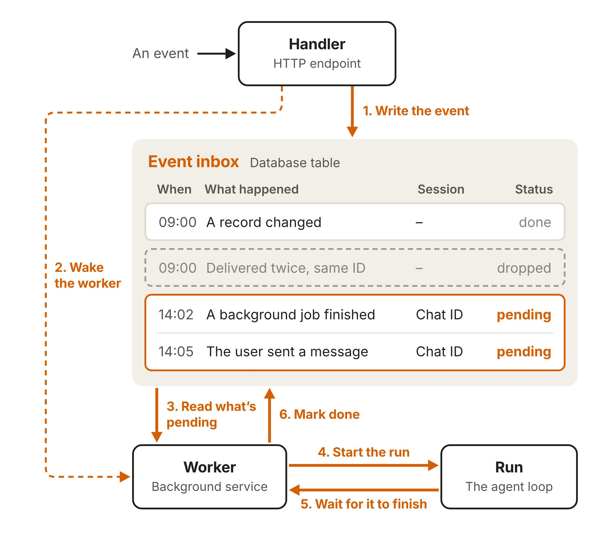
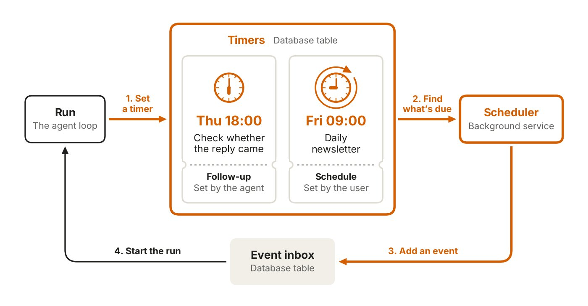
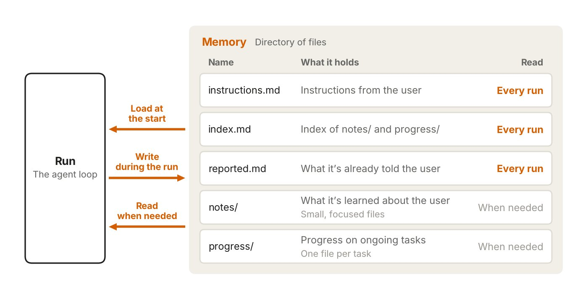
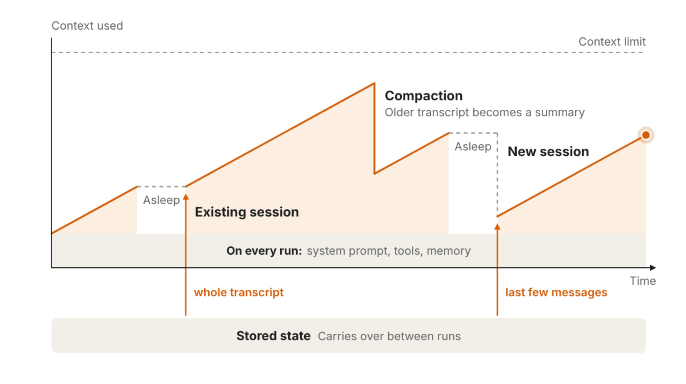
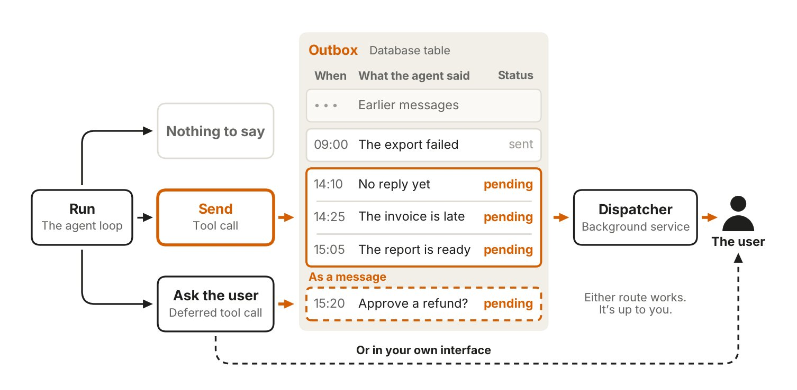
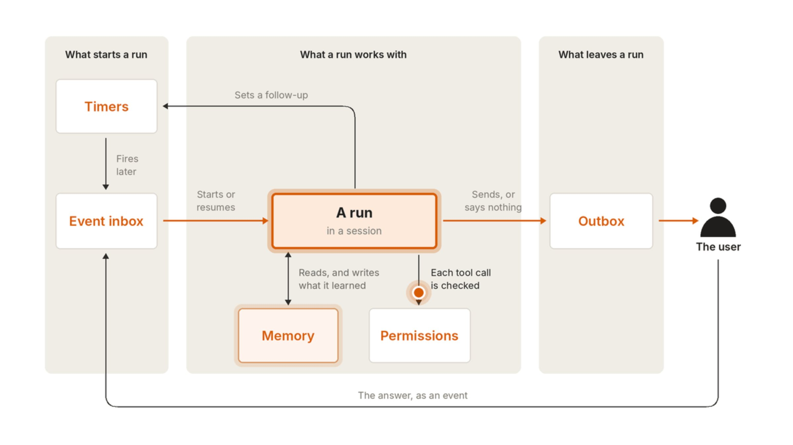
短评把五件东西分开点名。收件箱、计时器、记忆、权限各自出现。发件箱在他看来看都不新，因为队列加定时任务早就有人拼过。他更看重职责被划开，以及始终在线只是体验，模型不必一直醒着烧 token。
邵文另写了一句对照：SpacexSI 团队的 Lee Robinson，在斯坦福 CS146S 的讲座。题目里有 always-on，也有 proactive，还点了 @Bot。这句不在 William Hu 的正文里。
补充：本站已有课件页 CS146S · 10/8 Lee Robinson。封面文字是 How always-on agents work，日期写 October 8, 2026。和邵文所写的讲座标题不完全相同。邵文的 entities.posts 只有一条未展开的 id，没有给出课件 URL。不能据此把两场说成已经核对为同一场。
邵文把配套文档里的基准叫成 SWE-bench Pro 的子集。他写 Opus 5.5 和 Opus 5 的解题比例大致相当。他又写子集成绩不能拿去和公开榜单直接比。Hu 正文没有写出基准名字。他的 78% 在一项 long-horizon 基准上。40% 在典型工作负载上。
补充：本页打开了 Hu 链出的 成本优化文档。页面上写着 SWE-bench Pro subset，Opus 5 到 Opus 5.5 约从 91.9% 到 92.8%，以及 whose scores are not comparable to the public leaderboard。这是该文档的说法，经邵文转述。不把它改写成 Hu 正文里的原句。
邵文写：用户不一定在场。他又用了必须。范围是每一次运行。Hu 的原文是指令要跨 run 带上。两句都保留，不把「必须」挪回 Hu。
邵文写 dreaming 能找出只有跨很多次 run 才出现的规律，并给配套文写了日期：11 月 6 日。Hu 正文只给了链接，没有写这个日期。
邵文给 auto mode 那篇写了日期：3 月 25 日。Hu 正文只给了链接，没有写这个日期。
读后感是邵文自己的话。收件箱、计时器、记忆、权限和发件箱，他觉得看都不新。他建议先做收件箱，把它当成唯一可信来源，同时只留一个活跃 worker，并把连发消息合并成一次运行。中途新事件可以放到下一轮。也可以并入当前这轮。还可以中断重来。他说这个选择留给做产品的人。
记忆方面，他建议写成团队约定：只存以后查不到的。目录里分开存放指令，再放索引，再放已告知内容，最后是任务进度。dreaming 他只点到，细节要看配套文。
权限方面，他认为凭证要放在 Agent 环境之外，并由代理注入。他希望这从一开始就是默认。这是他的落地建议。Hu 写的是 recommended pattern。延后的调用会结束当前运行，并让 worker 去处理别的事。他用来对照的画面，是整个 Agent 挂起。用户再点击之前，系统只是干等。
邵文对官方同段的转述放在精读里，不在本节再搬一遍。本节只保留他多出来的句子和他的读后感。
Xudong 把这篇和 DeepSeek、LangChain 放在一起看
发帖的人是 Xudong Han，账号 @Xudong07452910。时间是 2026-11-15T01:20:00Z。状态号 2121775188639437102。这篇没有 Article。也没有 entities.code。也无配图。
他想把这篇和更早的 DeepSeek Super-agent，以及 LangChain 的 Async Subagents 对照着看。DeepSeek 在他笔下是：Router 先收 GitHub 和飞书事件，按授权规则决定开不开工，再交给独立 Worker。
LangChain 在他笔下是另一件事：主 Agent 继续应答。长任务交给后台 Subagent 自己跑，人还可以查看进度，也可以修改指令。
他说 Anthropic 这次把架构拆得很细。agent 平时在休眠。唤醒可以来自收到消息。也可以来自 Webhook。还可以来自定时。做完一轮再保存，然后继续休眠。
他数出 5 个组件，顺序和用词是他自己的。Inbox 被他用来做去重和失败重试。Timer 被他用来定时叫醒。Memory 被他用来留跨 Session 的进度。Permissions 被他用来管人工审批。Outbox 被他用来决定何时发消息。触发来源他写成收到消息，以及 Webhook。
他个人比较喜欢的设计叫 Deferred Tool Call。人要审批时，先把 Session 保存下来。Worker 被释放。等用户回复后再恢复。这样不会一直卡在原地。这是他对同一机制的读法。
收在一起，他觉得大家越来越关心 agent 怎样持续工作，以及怎样减少人的管理负担。他建议想自己搭的人系统学习这篇原文。原文链接指向同一篇官方文章。
补充：三篇已有学习页解决的不是同一张规格表，也不排先后。DeepSeek 那页主要讲事件怎样进门。LangChain 那两页主要讲后台执行时主循环还能不能说话、能不能改指令。本页讲的是跨 run 的外围架构。Xudong 没有写这句分工。
Super-agent：事件入口Agents Are Going AsyncManaged Deep Agents 的后台子任务Lody：睡下再被事件叫醒Agent 记忆的部件
Lody 和本站的记忆页是对照指针。官方原文只链了 Anthropic 自己的 agent memory 文章，没有提到 Lody。已核实的 DeepSeek 页写的是群聊、PR、CI 等事件进 Router，再分给隔离的 Worker。该页没有写「飞书」或「授权规则」。这两点只属于 Xudong 的帖。
用六个新场景检查你会不会用错
小测考的是应用。答错只回到对应节，不显示答案。做完也不会自动标成学完。